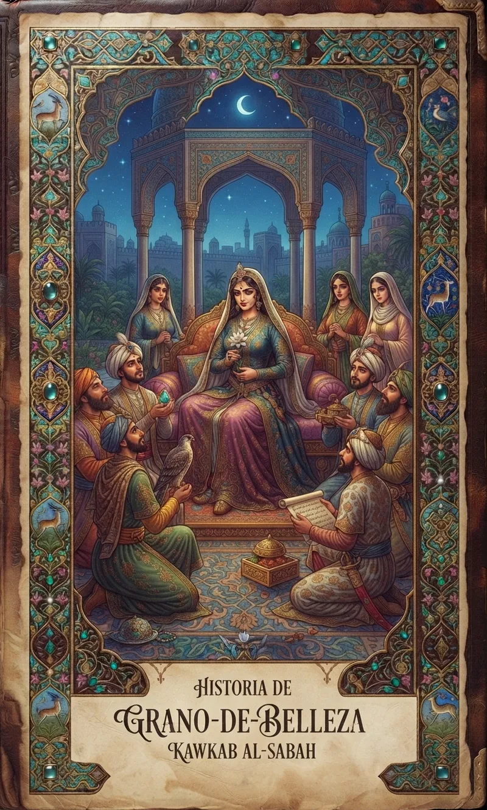
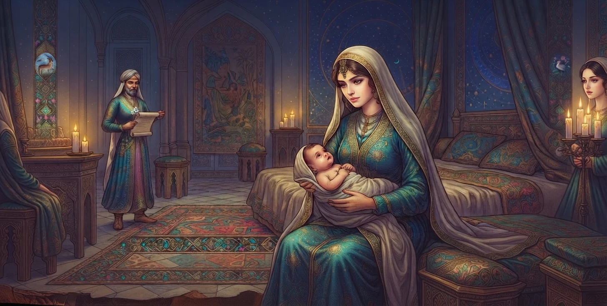
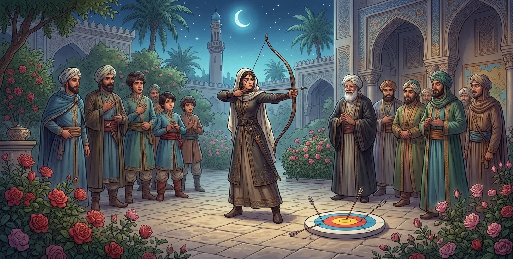
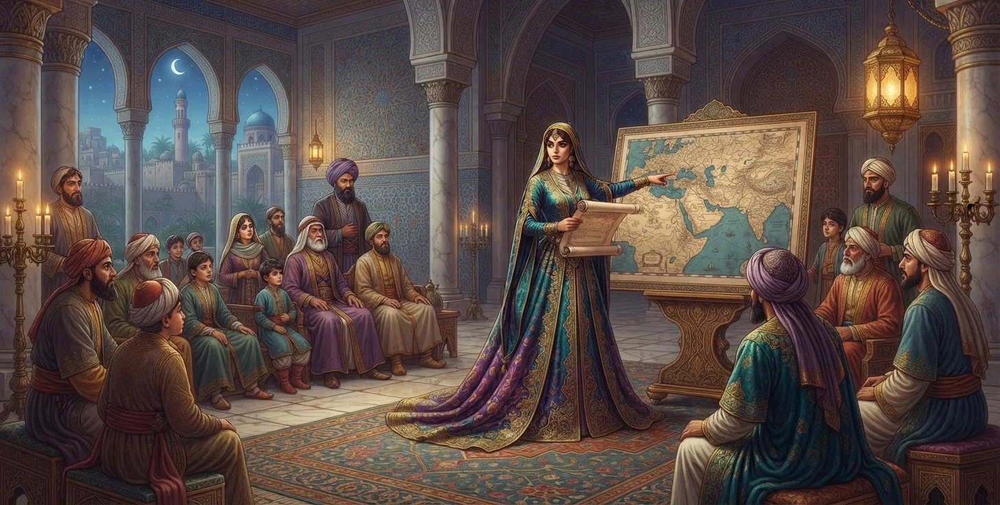

Las mil y una noches
Historia de Grano-de-Belleza

Ilustración de portada
Ficha del cuento
- Nombre original: Historia de Grano-de-Belleza
- Nombre en español: Historia de Grano-de-Belleza
- Relato: Una historia de aventuras, amor y superación sobre un joven que enfrenta diferentes dificultades.
- Autor: Anonimo (Recopilado en cuentos naturales)
- Epoca: Edad Media
- Origen: Tradición árabe y oriental
- Género: El amor, la valentía, las dificultades y la superación
- Idioma Origen: Arabe
Escucha la reseña
Toda la información de esta página, narrada en audio.
Personajes principales
Grano-de-belleza
Es un joven de extraordinaria belleza que vive diferentes aventuras y enfrenta numerosas dificultades.
Zobeida
Es una de las mujeres importantes en la vida de Grano-de-Belleza y forma parte de sus experiencias amorosas
Mahmud el Bilateral
Es un personaje que ayuda a Grano-de-Belleza y tiene un papel importante en los acontecimientos que cambian su destino.
Resumen
Grano-de-Belleza es un joven de gran hermosura que crece protegido por sus padres.
Al comenzar sus aventuras, enfrenta engaños, dificultades y viajes que cambian su vida,
hasta conseguir felicidad y prosperidad.
Enseñanzas del cuento
-
Ser perseverantes
Debemos seguir adelante a pesar de las dificultades.
-
Valorar mas la amistad
Las personas que nos ayudan pueden cambiar nuestro destino
-
No rendirse
Con esfuerzo y valentía podemos superar los obstaculos
Ilustraciones de la obra

El nacimiento secreto

La prueba del arco ante los pretendientes

El saber y la condición ante los pretendientes